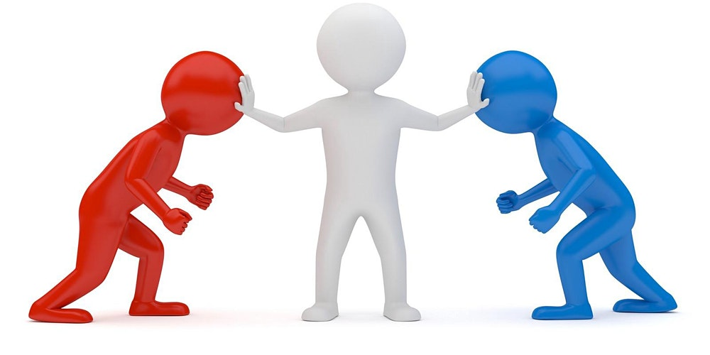

The most effective way to go about marriage is to focus more on the points that caused everything. Rather than going towards ways where it can hurt the other person, conflict should be handled with ration and caution. There are 4 things that must never be done unless one really does not want to solve the situation at hand. And those are:
1) Contempt 2) Criticism 3) Defensiveness 4)Stonewalling
Effect Methods for Conflict
Contempt
Contempt is where one person badmouths, talks bad towards the other partner, and basically resolves nothing with their partner. The partner that is being attacked is often ridiculed, mocked with sarcasm, called names, mimicked, insulted through eye-rolling or other body language. One person really goes all out in insulting the other person and asserts their dominance on them.
Example:
“You’re tired? Yeah cry me a river, as if that’s my problem. You’re such an idiot, you never think about how I feel and never do the damn chores around the house. ‘It’s been a long day at work’ yeah boo hoo I bet I’ve had a worse day but here I am, still doing my part at home.”
Criticism
Criticism is very different than complaining because it is where one person talks badly about the partner’s character and personality.
Some forms of criticism found in marriages doesn’t necessarily mean that it’s doomed but it could lead up to contempt which is a bigger problem.
Example:
Critisicm:“How can you forget that we had dinner reservations? You’re not that forgetful you’re just selfish and never think about me!”
Complaint: “I was afraid that you hadn’t called me to say that you couldn’t make it to our planned event. I thought we agreed to do that for each other.”
Defensiveness
Defensiveness is often the response to criticism because the victim in the relationship will feel like they are being attacked and will come back just to get the other person off their back. Whenever someone feels like they’re being cornered they find the first thing to attack their partner on to excuse themselves and act like the innocent one. This strategy is never successful as it conveys a form of non-listening and irresponsibility for mal actions. The partner does not take the other partner seriously and will not own up to their own faults, which can cause only more problems if one partner does not decide to back down or apologize.
Example:
Question: Did you go buy the groceries just like you promised to do this morning?
Defensive Response: “I was just too darn busy. As a matter of fact, I don’t remember you doing anything important today, why couldn’t you just do it?”
Stonewalling
Stonewalling is another bad method to resolving conflict because literally nothing is happening. The listener is often seen to withdraw from the interaction, shuts down, and just stops responding to the partner. The silent treatment, something everyone does, is an example of stone walling, but is not seen to be effective as the conflict is still there but it’s just not being addressed. When conflict arises, and stonewalling is present, people tend to distract themselves with busier things, tuning out, or just turning away. The best way to handle a conflict if felt it was being too much is to do the following:
Example:
“I’m feeling a little too angry to be talking about this. Can we take a break and come back together to talk about this problem in a bit? I just feel like it would be better to resolve things after I’ve calmed down.